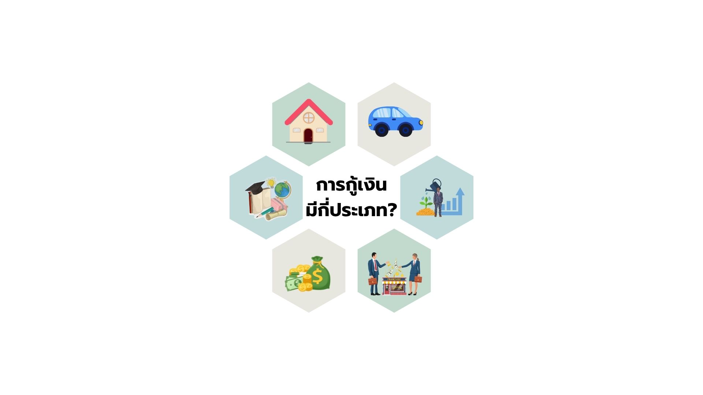
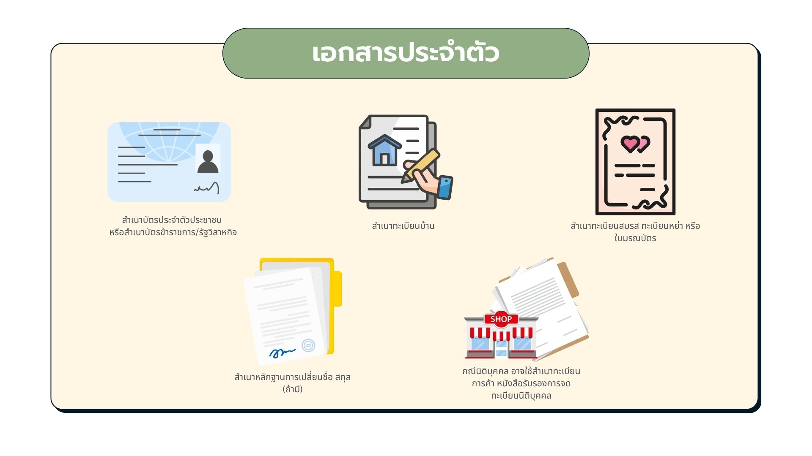
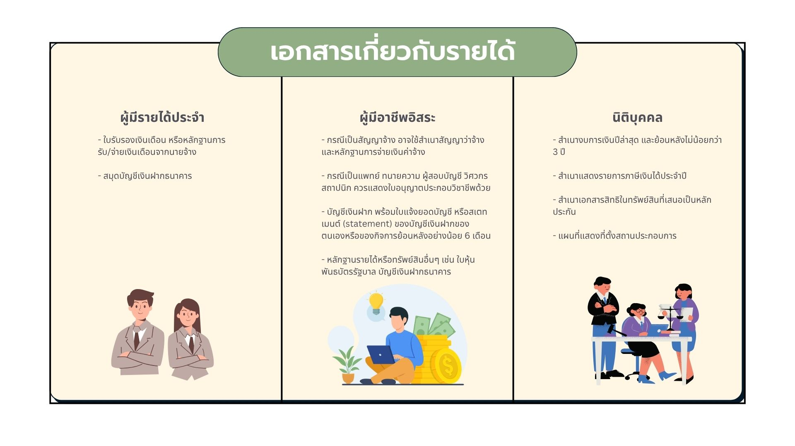
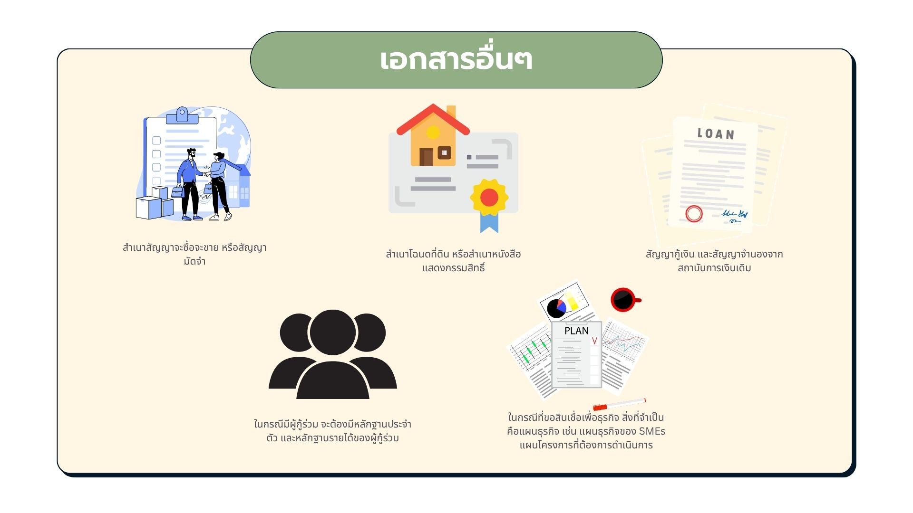
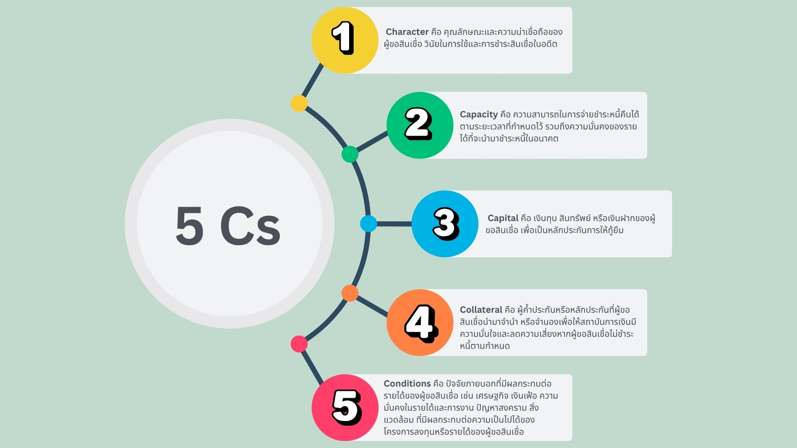
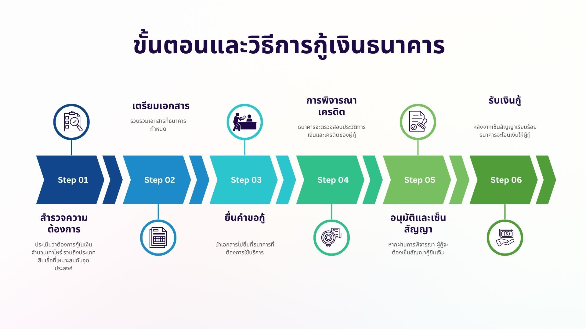

คู่มือการกู้เงินธนาคาร
การกู้เงินธนาคารเป็นทางเลือกที่หลายคนใช้เมื่อต้องการเงินทุนเพื่อวัตถุประสงค์ต่างๆ ไม่ว่าจะเป็นการซื้อบ้าน ซื้อรถยนต์ หรือเพื่อการลงทุน ในบทความนี้เราจะพาไปทุกคนไปทำความเข้าใจถึงขั้นตอนการกู้เงินจากธนาคาร ว่าการกู้เงินธนาคารใช้อะไรบ้าง ? วิธีกู้เงินธนาคาร หลักประกันเงินกู้มีอะไรบ้าง? รวมถึงข้อควรรู้ก่อนตัดสินใจกู้ เพราะจะช่วยให้คุณเตรียมตัวได้อย่างถูกต้อง และเพิ่มโอกาสในการได้รับอนุมัติเงินกู้มากขึ้น
การกู้เงินมีกี่ประเภท?

การกู้เงินจากธนาคารหรือสถาบันการเงินนั้นมีจุดหลายประเภท ซึ่งถูกออกแบบมาให้เหมาะสมกับความต้องการและวัตถุประสงค์ของผู้กู้แต่ละคน โดยประเภทการกู้เงินที่พบบ่อยหลักๆ มีดังนี้
1. การกู้เงินส่วนบุคคล
การกู้เงินนี้ประเภทนี้เหมาะสำหรับผู้ที่ต้องการใช้เงินเพื่อนำไปใช้จ่ายส่วนตัว เช่น ค่าใช้จ่ายฉุกเฉิน ค่ารักษาพยาบาล ค่าซ่อมแซมที่อยู่อาศัย ฯลฯ วงเงินกู้มักขึ้นอยู่กับรายได้และประวัติการเงินของผู้กู้ ซึ่งอัตราดอกเบี้ยของสินเชื่อประเภทนี้มักจะสูงกว่าสินเชื่อที่มีหลักประกัน
2. การกู้เงินเพื่อซื้อบ้าน
สำหรับผู้ที่ต้องการซื้อบ้านหรือคอนโด ธนาคารจะให้กู้เงินโดยใช้บ้านหรือคอนโดเป็นหลักประกัน วงเงินกู้มักครอบคลุมราคาซื้อบ้านบางส่วนหรือทั้งหมด ขึ้นอยู่กับการพิจารณาของธนาคาร และมีระยะเวลาผ่อนชำระที่ยาวนาน อาจถึง 20-30 ปี ซึ่งการกู้เงินประเภทนี้มักมีดอกเบี้ยต่ำกว่าสินเชื่อบางประเภท เช่น สินเชื่อส่วนบุคคล สินเชื่อเพื่อธุรกิจ ฯลฯ เนื่องจากมีหลักประกันที่มั่นคง
3. การกู้เงินเพื่อซื้อรถยนต์
ใครอยากซื้อรถใหม่ ไม่ว่าจะเป็นรถมือหนึ่งหรือมือสอง ธนาคารจะใช้รถยนต์ที่ซื้อเป็นหลักประกันในการกู้เงินประเภทนี้ โดยวงเงินกู้จะขึ้นอยู่กับราคาของรถยนต์และระยะเวลาผ่อนชำระ โดยส่วนใหญ่มักอยู่ในช่วง 3-7 ปี
4. การกู้เงินเพื่อธุรกิจ
สำหรับผู้ประกอบการที่ต้องการเงินทุนเพื่อขยายธุรกิจหรือเริ่มต้นกิจการใหม่ การกู้เงินประเภทนี้อาจต้องใช้หลักประกัน เช่น ที่ดินหรือทรัพย์สินของธุรกิจ เพื่อค้ำประกันการกู้
5. การกู้เงินเพื่อการศึกษา
สำหรับผู้ที่ต้องการเงินทุนในการศึกษาทั้งในและต่างประเทศ ก็มีวงเงินจากธนาคารให้กู้เช่นกัน ซึ่งการกู้เงินเพื่อนการศึกษามักมีอัตราดอกเบี้ยต่ำไม่เกิน 1% ต่อปี และระยะเวลาผ่อนชำระที่ยืดหยุ่น บางครั้งอาจเริ่มชำระคืนหลังจากจบการศึกษาแล้วตามพระราชบัญญัติกองทุนเงินให้กู้ยืมเพื่อการศึกษา (ฉบับที่ 2) พ.ศ. 2566
6. การกู้เงินเพื่อการลงทุน
สำหรับนักลงทุนที่ต้องการกู้เงินเพื่อนำไปลงทุนในสินทรัพย์ต่างๆ เช่น หุ้น พันธบัตร หรือกองทุนรวม โดยวงเงินกู้จะขึ้นอยู่กับหลักประกันหรือสินทรัพย์ที่ผู้กู้ถือครอง
เอกสารที่ใช้ในการขอสินเชื่อ

1. เอกสารประจำตัว
- สำเนาบัตรประจำตัวประชาชน หรือสำเนาบัตรข้าราชการ/รัฐวิสาหกิจ
- สำเนาทะเบียนบ้าน
- สำเนาทะเบียนสมรส ทะเบียนหย่า หรือใบมรณบัตร
- สำเนาหลักฐานการเปลี่ยนชื่อ สกุล (ถ้ามี)
- กรณีนิติบุคคล อาจใช้สำเนาทะเบียนการค้า หนังสือรับรองการจดทะเบียนนิติบุคคล

2. เอกสารเกี่ยวกับรายได้
- ผู้มีรายได้ประจำ: ใบรับรองเงินเดือน หรือหลักฐานการรับ/จ่ายเงินเดือนจากนายจ้าง, สมุดบัญชีเงินฝากธนาคาร
- ผู้มีอาชีพอิสระ: สำเนาสัญญาว่าจ้างและหลักฐานการจ่ายเงินค่าจ้าง, ใบอนุญาตประกอบวิชาชีพ, บัญชีเงินฝาก พร้อมใบแจ้งยอดบัญชี หรือสเตทเมนต์ย้อนหลังอย่างน้อย 6 เดือน, หลักฐานรายได้หรือทรัพย์สินอื่นๆ เช่น ใบหุ้น พันธบัตรรัฐบาล
- นิติบุคคล: สำเนางบการเงินปีล่าสุดและย้อนหลังไม่น้อยกว่า 3 ปี, สำเนาแสดงรายการภาษีเงินได้ประจำปี, สำเนาเอกสารสิทธิในทรัพย์สินที่เสนอเป็นหลักประกัน, แผนที่แสดงที่ตั้งสถานประกอบการ

3. เอกสารอื่นๆ
- สำเนาสัญญาจะซื้อจะขาย หรือสัญญามัดจำ
- สำเนาโฉนดที่ดิน หรือสำเนาหนังสือแสดงกรรมสิทธิ์
- สัญญากู้เงิน และสัญญาจำนองจากสถาบันการเงินเดิม
- กรณีมีผู้กู้ร่วม ต้องมีหลักฐานประจำตัวและหลักฐานรายได้ของผู้กู้ร่วม
- ขอสินเชื่อเพื่อธุรกิจ: แผนธุรกิจ เช่น แผนธุรกิจของ SMEs หรือแผนโครงการ
- แบบฟอร์มอื่น ๆ เช่น คำยินยอมเปิดเผยข้อมูล, คำขออนุญาตให้เจ้าหน้าที่ติดต่อ, ใบคำขอประเภทอื่น
หลักประกันเงินกู้ มีอะไรบ้าง?

การกู้เงินบางประเภท โดยเฉพาะสินเชื่อที่มีวงเงินสูง เช่น สินเชื่อบ้านหรือสินเชื่อรถยนต์ ธนาคารมักจะต้องการ ‘หลักประกัน’ เพื่อให้มั่นใจว่าผู้กู้มีความสามารถในการชำระหนี้คืน หากผู้กู้ไม่สามารถชำระหนี้ได้ ธนาคารจะใช้หลักประกันนั้นเพื่อชดเชยความเสียหายจากการผิดชำระหนี้ ซึ่งหลักประกันที่ใช้กันทั่วไปมีดังนี้
- ที่ดินหรืออสังหาริมทรัพย์
- รถยนต์
- เงินฝากหรือพันธบัตร
- สินทรัพย์ที่มีค่า เช่น เครื่องจักรหรืออุปกรณ์สำหรับธุรกิจ
- บุคคลค้ำประกัน
สิ่งที่ควรทำเมื่อเป็นผู้ค้ำประกัน
- อ่านเงื่อนไขในการค้ำประกันให้ละเอียด
- ทำความเข้าใจเกี่ยวกับขอบเขตความรับผิดชอบในฐานะผู้ค้ำประกัน
- ตรวจสอบความถูกต้องของวงเงินและประเภทของสินเชื่อที่ค้ำประกันที่ระบุในสัญญา
- หากสงสัยอะไรรีบถามก่อนลงชื่อในสัญญา
การมีหลักประกันที่มั่นคงจะช่วยให้ธนาคารมีความมั่นใจในความเสี่ยงที่ต่ำลง จึงมักจะทำให้ผู้กู้ได้รับเงื่อนไขที่ดีกว่า เช่น อัตราดอกเบี้ยที่ต่ำลงและวงเงินกู้ที่สูงขึ้น
เกณฑ์ที่สถาบันการเงินใช้พิจารณาสินเชื่อ

ในการพิจารณาอนุมัติสินเชื่อจะขึ้นอยู่กับนโยบายและหลักเกณฑ์ของผู้ให้สินเชื่อแต่ละราย โดยทั่วไปแล้วมีปัจจัยหลัก ๆ ที่ใช้ประกอบการพิจารณา คือ
- นโยบายสินเชื่อของผู้ให้สินเชื่อ
- วัตถุประสงค์ในการขอสินเชื่อ
- คุณลักษณะและความสามารถในการชำระหนี้ของผู้ขอสินเชื่อ (5Cs: Character, Capacity, Capital, Collateral, Conditions)
ถ้าผู้ขอสินเชื่อมีอาชีพและรายได้มั่นคง ไม่เคยมีหนี้สินล้นพ้นตัว มีความสามารถในการชำระหนี้ การขอสินเชื่อก็คงไม่ติดปัญหาอะไร แต่หากไม่มีหน้าที่การงานที่มั่นคง ไม่มีเอกสารใบรับรองเงินเดือน โอกาสการได้เงินกู้ยังคงมีอยู่ เพราะอาจใช้หลักฐานทางการเงินอื่น ๆ ทดแทนได้ เช่น ใบแจ้งยอดบัญชี หรือสเตทเมนต์ของบัญชีเงินฝาก
สิทธิของผู้ขอสินเชื่อกรณีไม่ได้รับอนุมัติ
หากผู้ขอสินเชื่อถูกปฏิเสธสินเชื่อจากสถาบันการเงิน ผู้ขอสินเชื่อสามารถขอทราบเหตุผลของการไม่อนุมัติสินเชื่อจากสถาบันการเงินเป็นลายลักษณ์อักษรได้ เพื่อปรับปรุงศักยภาพและสามารถขอสินเชื่อใหม่ในอนาคต รวมถึงขอรับคืนเอกสารสำคัญที่เคยยื่นไว้ เช่น งบการเงิน แผนธุรกิจ รายละเอียดหลักประกัน
ขั้นตอนและวิธีการกู้เงินธนาคาร

- สำรวจความต้องการ: ประเมินว่าต้องการกู้ในเงินจำนวนเท่าไหร่ รวมถึงประเภทสินเชื่อที่เหมาะสมกับจุดประสงค์
- เตรียมเอกสาร: รวบรวมเอกสารที่ธนาคารกำหนด
- ยื่นคำขอกู้: นำเอกสารไปยื่นที่ธนาคารที่ต้องการใช้บริการ
- การพิจารณาเครดิต: ธนาคารจะตรวจสอบประวัติการเงินและเครดิตของผู้กู้
- อนุมัติและเซ็นสัญญา: หากผ่านการพิจารณา ผู้กู้จะต้องเซ็นสัญญากู้ยืมเงิน
- รับเงินกู้: หลังจากเซ็นสัญญาเรียบร้อย ธนาคารจะโอนเงินให้ผู้กู้
การกู้เงินธนาคารเป็นทางเลือกที่ช่วยให้คุณบรรลุเป้าหมายทางการเงิน ไม่ว่าจะเป็นการซื้อบ้าน รถยนต์ หรือการลงทุน แต่ก่อนตัดสินใจควรเตรียมตัวให้พร้อมทั้งด้านเอกสาร ความสามารถในการชำระหนี้ และการเลือกประเภทสินเชื่อที่เหมาะสม ทั้งนี้ ผู้กู้ควรเข้าใจขั้นตอนและเงื่อนไข พร้อมศึกษารายละเอียดอย่างรอบคอบ เพื่อช่วยให้กระบวนการกู้ยืมเป็นไปได้อย่างราบรื่นและส่งผลดีต่อผู้กู้นั่นเอง